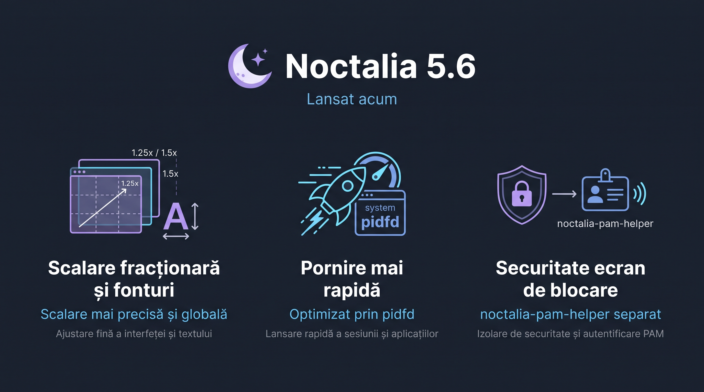

Noctalia 5.6 a fost lansat: Scalare fracționară mai precisă, scalare globală a fonturilor, pornire mai rapidă prin pidfd și autenticarea ecranului de blocare separată în noctalia-pam-helper

Noctalia, mediul shell nativ Wayland conceput pentru compositoare precum Hyprland, Niri, Sway și labwc, a primit versiunea 5.6. Actualizarea introduce o opțiune dedicată de scalare globală a fonturilor, remediază problemele de randare pe ecranele cu scalare fracționară, optimizează pornirea prin eliminarea blocajelor PipeWire și a polling-ului periodic și aduce o modificare arhitecturală importantă pentru menținătorii de pachete privind ecranul de blocare.
1. Scalare fracționară, fonturi și teme dinamice
Scalare globală a fonturilor (
Font Scale): Disponibilă în Settings > Appearance > Accessibility > Font Scale, permite ajustarea dimensiunii textului în întregul shell fără a modifica dimensiunea pictogramelor sau spațierea interfeței.Aliniere la preferințele de sistem: Noctalia preia acum implicit familia de fonturi a sistemului (citind setările GNOME sau GTK, păstrând totodată fonturile configurate explicit) și respectă modificările de dimensiune ale sistemului, inclusiv opțiunea de accesibilitate Large Text din GNOME.
Randare mai clară pe ecrane HiDPI / scalare fracționară: Imaginile, avatarele și textul se aliniază mai precis la grila de pixeli (pixel grid), iar imaginile sunt decodate direct la dimensiunile afișate (panourile și ferestrele pop-up așteaptă scurt finalizarea decodării pentru a evita afișarea pictogramelor goale). De asemenea, factorul de scalare fracționară preferat de compositor supraviețuiește schimbărilor de configurație a monitoarelor, iar utilizatorii NVIDIA beneficiază de redimensionarea corectată a ferestrelor (aplicată chiar pe cadrul următor).
Paletă cromatică și pictograme adaptive: Paleta implicită a fost actualizată cu suprafețe mai blânde de tip midnight-blue și o variantă luminoasă lavender-gray. Temele de pictograme care suportă proprietatea
FollowsColorScheme(precum Breeze, Tela și Colloid) își pot recolora automat elementele compatibile folosind paleta activă a shell-ului.
2. Performanță la pornire, Dock și Lansator
Optimizări de sistem (
pidfdși PipeWire): Pornirea shell-ului nu mai blochează execuția în timpul inițializării PipeWire, căutarea pictogramelor este accelerată prin directoare indexate și cache-uri GTK, iar gestionarea proceselor copil (child processes) utilizează apelul Linuxpidfdîn locul interogării periodice (polling).Îmbunătățiri pentru Dock: Clicul pe pictograma unei aplicații activează acum cea mai recent utilizată fereastră a acesteia, ordinea aplicațiilor este păstrată la reîncărcarea configurației sau la schimbarea vizibilității, iar gestionarea ferestrelor minimizate sporește compatibilitatea cu compositoarele bazate pe protocolul
wlr-foreign-toplevel-management.Căutare Unicode și funcții suplimentare: Lansatorul de aplicații permite acum căutarea caracterelor Unicode uzuale (punctuație, săgeți, simboluri matematice, litere grecești și caractere de desenare a casetelor) după nume sau cod Unicode. Alte noutăți includ acțiunile Open și Show in folder în notificările pentru capturi de ecran, reordonarea prin drag-and-drop în listele de setări și un mod automat care mută bara pe stratul Overlay la deschiderea unui panou atașat.
3. Schimbare critică de împachetare (noctalia-pam-helper)
Separarea autentificării pentru Lock Screen: Autentificarea ecranului de blocare rulează acum printr-un executabil separat numit
noctalia-pam-helper.Impact pentru distribuții: Menținătorii de pachete trebuie să includă acest binar în pachetele distribuțiilor; în absența lui, ecranul de blocare nu poate autentifica utilizatorii.